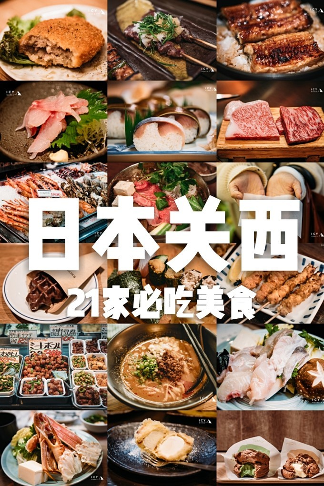
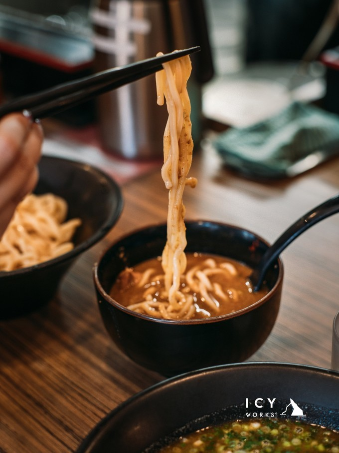
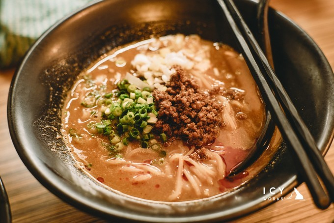

旅游攻略
旅游攻略
历时半个月，我们吃出了一份日本关西美食必吃榜！
在关西半个月，吃到走不动

第一次旅行的时候，我们还在规划当地经典景点行程。而现在，安排的是当地的必吃餐厅。 日本 关西 ，半个月行程，我们替你吃出了一份 关西 美食榜单。 可能需要准备好纸巾，用来擦擦口水。😂

京都 唯一一家让我们排了两次队也要吃的拉面店。 招牌蘸面用的是粗面，比一般 日本 拉面粗差不多一倍，形态也是弯弯曲曲的，煮好后过一道冷水，口感相当劲道滑弹。以柴鱼昆布为基底的酱汁浓郁香醇，厚厚地裹在粗面上，入口的瞬间，简直觉得味蕾欢快地跳起了舞！

辣味肉味增拉面则是传统的细面，伴着辣味的肉沫面条在汤汁中充分入味，也非常过瘾！不比招牌蘸面差。